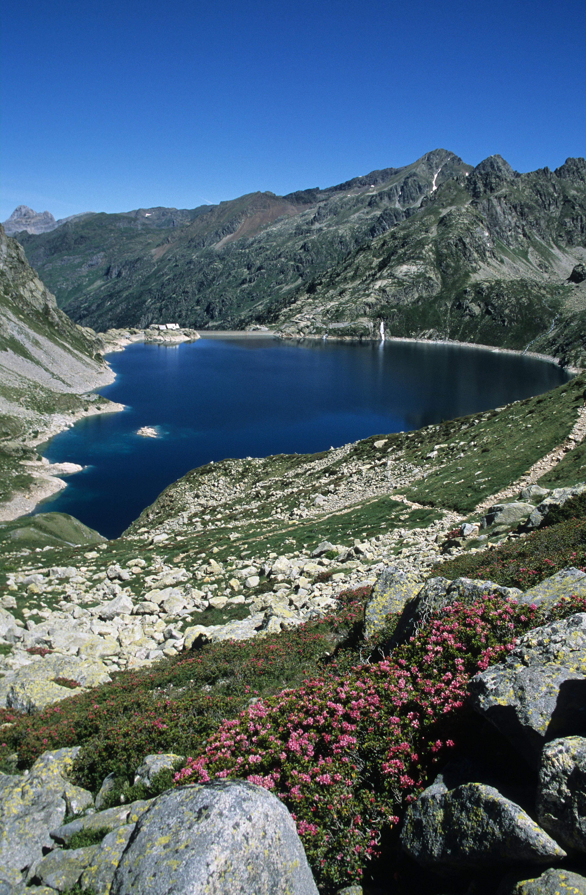
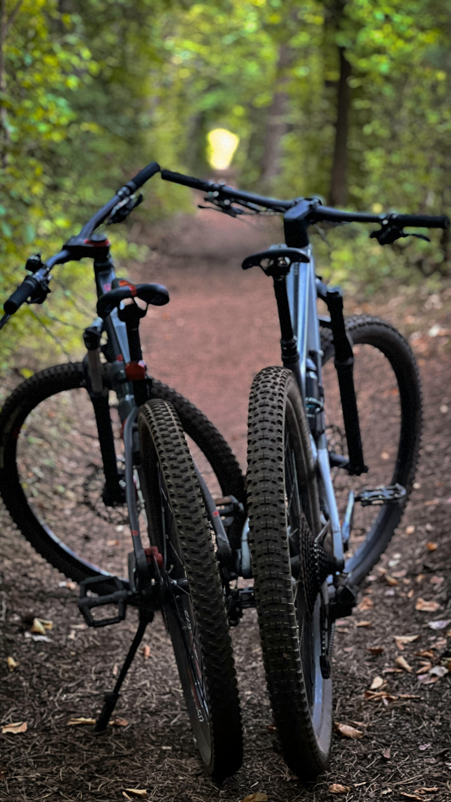
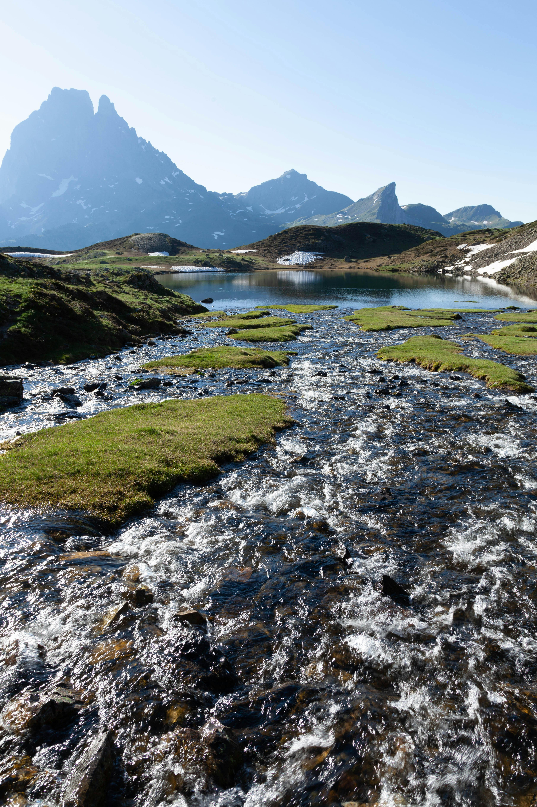
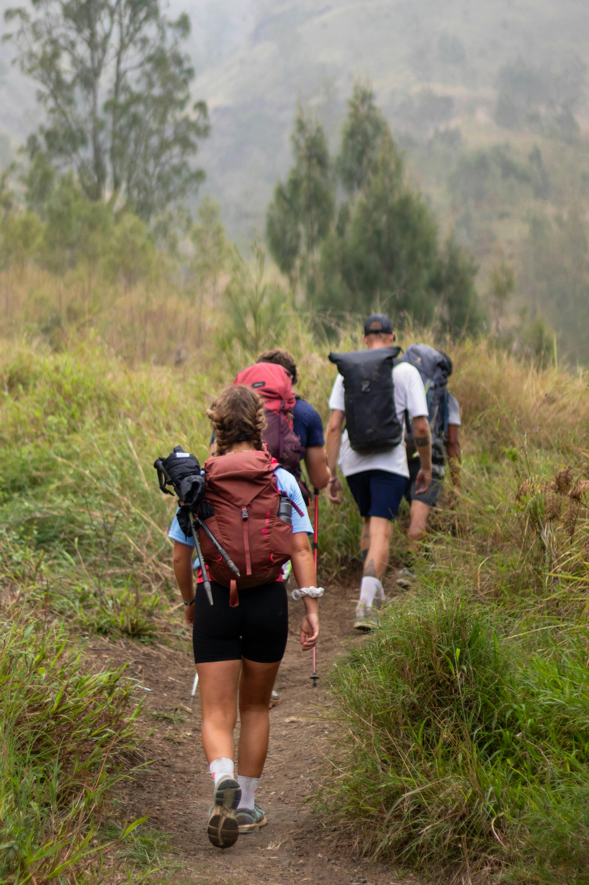
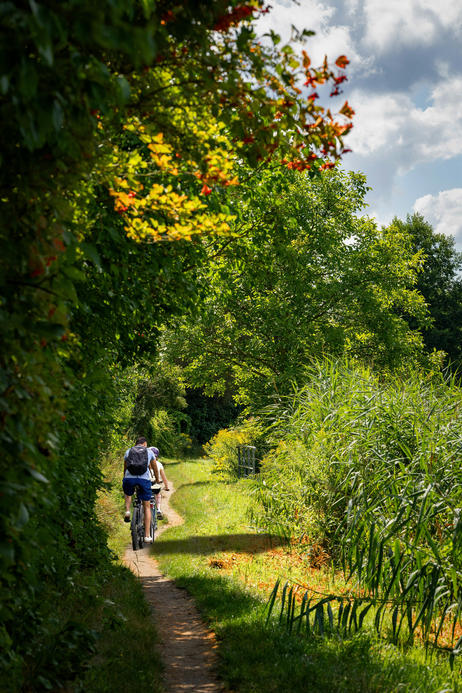
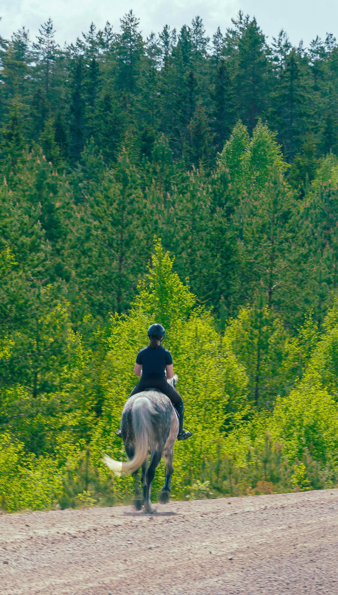
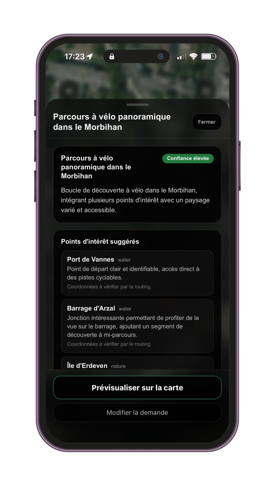

Points d'intérêt
Repérez les lieux à découvrir autour de vous.
Explorer, pratiquer, signaler
Les bonnes informations, au bon endroit, au bon moment
Explorer
Chemins, points d'intérêt, zones sensibles, activités en cours : Naterra rassemble les informations utiles pour mieux comprendre ce qui vous entoure.
Repérez les lieux à découvrir autour de vous.

Visualisez sentiers, routes et passages utiles.

Identifiez les secteurs à connaître avant de partir.

Créez des parcours adaptés à votre pratique : rando, trail, VTT, équitation...
Toutes les informations utiles réunies au même endroit.

Préparez vos sorties et consultez vos repères même sans réseau.

Pratiquer
Randonnée, chasse, tourisme, trail, cyclisme, équitation : Naterra adapte la lecture du territoire à votre pratique.

Créez des itinéraires adaptés, repérez les points utiles et progressez même hors réseau.
Organisez vos chasses, suivez les participants en live et alertez les usagers proches.
Découvrez le patrimoine local, trouvez les lieux à visiter, composez vos balades nature.

Tracez vos parcours, analysez vos sorties et retrouvez les infos utiles avant de partir.

Préparez vos sorties route, gravel ou VTT avec les bonnes informations du terrain local.

Préparez vos itinéraires à cheval et consultez les infos utiles avant de partir dehors.
Partagez ce que vous voyez : danger immédiat, accès bloqué, faune, activité en cours ou observation locale. Chaque signalement aide les autres.


Carte, signalements, alertes, live, itinéraires et territoires : Naterra rassemble les informations utiles pour préparer, pratiquer et partager vos sorties.

Visualisez les lieux utiles, zones sensibles, activités en cours et signalements terrain autour de vous.

Recevez les informations publiées par les territoires, organisateurs ou acteurs locaux : fermeture, danger, accès ou message important.
Bientôt
Soyez prévenu dans l'app lorsqu'un risque important est détecté près de vous ou de votre activité.

Lancez une sortie ou coordonnez un événement avec positions live, participants et informations utiles sur la carte.

Préparez des parcours adaptés à votre pratique, au terrain et aux points d'intérêt autour de vous.

Créez, organisez et partagez un territoire lisible avec ses zones, accès, points clés et informations terrain.

Repérez les lieux remarquables, le patrimoine local et les points d'intérêt à découvrir dehors.
Naterra est actuellement en bêta terrain. Installez l'app: explorez, pratiquez, signalez.